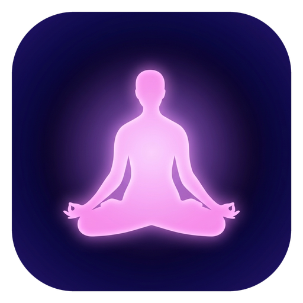

Mixed theta and delta waves aid relaxation and may induce sleep (60 minutes)

Mixed theta and delta waves aid relaxation and may induce sleep (60 minutes)
Binaural Beats: Two constant tones played separately into Left & Right ears. Beat is synthesized by your brain. Requires stereo headphones.
Left ear plays the Base Frequency; Right ear plays Base Frequency + Program Beat Frequency via stereo headphones.
Gentle volume is best. Brain entrainment operates via frequency difference, not loudness.
Blends warm soothing noise beneath pure sine tones to soften auditory fatigue.
Performs a gentle 5-second exponential audio fade-out across both binaural tones and ambient soundscape before ringing the 528 / 660 / 792 Hz Solfeggio chime (or silent fade-out when Chime is OFF).
Displays an expanding cosmic biofeedback mandala on the chart stage to guide Box Breathing, 4-7-8 Pranayama, or HRV Coherent Breathing alongside your session.
Binaural beats require true stereo separation between your left and right ears.
Binality is open-source! Access the code, raise issues and make bug reports here — https://github.com/amtivey/binality
Please see this Wikipedia article for more information on how binaural beats work.
Disclaimer: Binality is for relaxation and entertainment only. It is not a medical device and does not provide medical advice, diagnosis or treatment. Program names such as "Pain Relief" and "Universal Healing" describe traditional uses of binaural beats, not claims of medical benefit. Do not use while driving or operating machinery. If you have epilepsy, a heart condition or other medical concerns, consult a doctor before use.